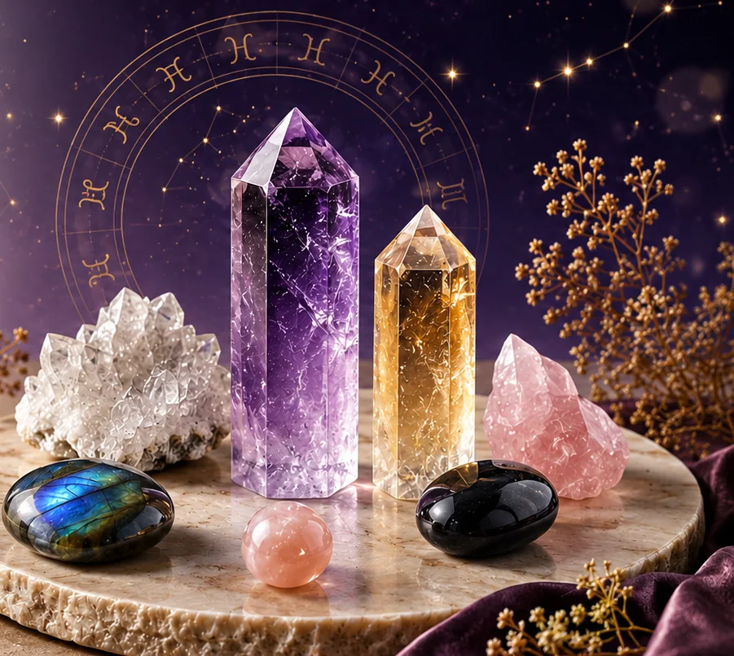

A
A
March 21 – April 19 · Fire
Aries
Courage · Action · Bold Energy
- Best for
- Confidence, motivation, bold energy
- Crystals
- Carnelian, Red Jasper, Citrine, Hematite
- Element
- Fire
12-Sign Astrology Crystal Guide
Which crystals go with your zodiac sign? Compare traditional astrology stones, meanings and elemental associations for all 12 signs, then choose a crystal that fits your intention.

Astrology Stones
The most commonly recommended zodiac crystals are Carnelian for Aries, Rose Quartz for Taurus, Citrine for Gemini, Moonstone for Cancer, Sunstone for Leo, Amazonite for Virgo, Lapis Lazuli for Libra, Obsidian for Scorpio, Turquoise for Sagittarius, Smoky Quartz for Capricorn, Amethyst for Aquarius and Aquamarine for Pisces. Each sign can be paired with several stones, so use the chart below to compare alternatives by element and intention.
These pairings come from modern crystal and astrology traditions. They are symbolic suggestions—not medical advice or fixed rules—so choose a stone that also suits your taste and purpose.

Quick Answer
Use this chart for a quick comparison, then open the detailed cards below for dates, elements and intentions.
| Zodiac Sign | Element | Recommended Crystals | Traditional Focus |
|---|---|---|---|
| Aries | Fire | Carnelian, Red Jasper, Citrine, Hematite | Courage and action |
| Taurus | Earth | Green Aventurine, Rose Quartz, Tiger’s Eye, Jade | Stability and abundance |
| Gemini | Air | Citrine, Aquamarine, Clear Quartz, Sodalite | Communication and focus |
| Cancer | Water | Moonstone, Rose Quartz, Selenite, Amethyst | Intuition and comfort |
| Leo | Fire | Sunstone, Citrine, Tiger’s Eye, Pyrite | Confidence and creativity |
| Virgo | Earth | Amazonite, Fluorite, Clear Quartz, Moss Agate | Clarity and grounded calm |
| Libra | Air | Rose Quartz, Lapis Lazuli, Opal, Green Aventurine | Harmony and relationships |
| Scorpio | Water | Obsidian, Labradorite, Garnet, Malachite | Transformation and protection |
| Sagittarius | Fire | Turquoise, Citrine, Sodalite, Amethyst | Adventure and insight |
| Capricorn | Earth | Smoky Quartz, Garnet, Onyx, Tiger’s Eye | Discipline and resilience |
| Aquarius | Air | Amethyst, Aquamarine, Labradorite, Fluorite | Originality and vision |
| Pisces | Water | Amethyst, Moonstone, Aquamarine, Clear Quartz | Intuition and reflection |
Find Your Sign
12 Zodiac Signs
Use this zodiac crystal guide to match your sign with stones for confidence, calm, intuition, protection, love, abundance, and spiritual growth.
A
Courage · Action · Bold Energy
 T
T
Stability · Abundance · Calm
 G
G
Communication · Curiosity · Focus
 C
C
Intuition · Emotional Care · Comfort
 L
L
Radiance · Confidence · Creativity
 V
V
Clarity · Balance · Grounded Calm
 L
L
Harmony · Love · Beauty
 S
S
Transformation · Protection · Depth
 S
S
Freedom · Adventure · Growth
 C
C
Ambition · Discipline · Resilience
 A
A
Vision · Innovation · Insight
 P
P
Dreams · Intuition · Spiritual Flow
Shop by Element
Aries, Leo, Sagittarius
Carnelian, Citrine, Sunstone, Red JasperRequest Fire Sign CrystalsTaurus, Virgo, Capricorn
Green Aventurine, Smoky Quartz, Moss Agate, Tiger’s EyeRequest Earth Sign CrystalsGemini, Libra, Aquarius
Clear Quartz, Aquamarine, Fluorite, Lapis LazuliRequest Air Sign CrystalsCancer, Scorpio, Pisces
Moonstone, Amethyst, Obsidian, LabradoriteRequest Water Sign CrystalsBeginner Friendly
Start with your zodiac sign and explore the crystals traditionally connected with its element and energy.
If you want protection, love, clarity, abundance, or confidence, choose a stone that matches your current goal.
Fire signs may enjoy red and golden stones, while water signs often connect with blue, purple, and moonlit crystals.
Bracelets are easy to wear daily, towers are beautiful for display, and crystal sets are perfect for gifting.
Wholesale & Private Label
Build your own zodiac crystal collection with bracelets, towers, tumbled stones, gift boxes, astrology cards, and private label packaging.
FAQ
Each sign is commonly connected with several stones rather than one required crystal. For example, Aries is often paired with Carnelian and Red Jasper, Taurus with Green Aventurine and Rose Quartz, Gemini with Citrine and Aquamarine, and Cancer with Moonstone and Rose Quartz. Use the complete chart above to compare all 12 signs.
The best crystal depends on your zodiac sign, element, and personal intention. Fire signs may enjoy confidence stones like Carnelian or Citrine, while water signs may connect with Moonstone, Amethyst, or Labradorite.
Many people wear zodiac crystal bracelets or keep zodiac stones nearby as a daily reminder of their intention and personal energy.
Not exactly. Birthstones are usually linked to birth months, while zodiac crystals are chosen based on astrological signs, elements, traits, and energy intentions.
A zodiac crystal set usually includes several stones selected for one zodiac sign, often paired with a card explaining the sign’s energy and crystal meanings.